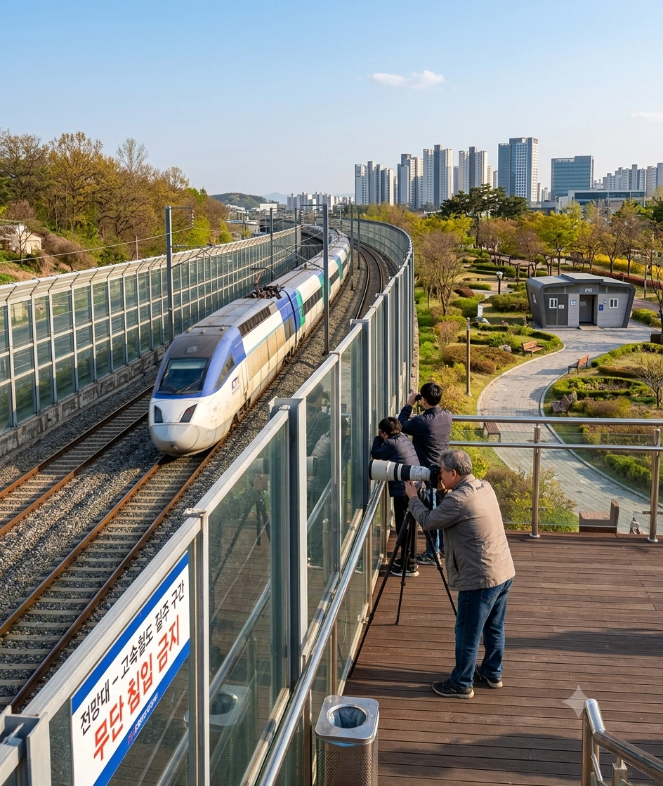

고속철도공원
High-Speed Rail Park

"이곳은 단순한 공원이 아닙니다. KTX와 SRT를 코앞에서 영접하기 위한 합법적 제단입니다."
- 어느 철도 동호인
1. 개요
효빈광역시 동구 덕현동에 위치한 소규모 근린공원. 이름 그대로 빈효고속선 연선에 딱 붙어 있어 시속 300km로 질주하는 고속열차를 가장 생생하게 관람할 수 있는 철도 테마 공원이다.
일반 시민들에게는 산책로와 쉼터 역할을 하지만, 철도 동호인(일명 '철덕')들에게는 효빈역과 함께 효빈시를 대표하는 성지이자 최고의 출사지로 꼽힌다.
2. 역사 및 특징
본래 이곳은 2014년 12월 빈효고속선이 개통될 당시, 선로변 소음 방지를 위해 높은 콘크리트 방음벽을 치고 남은 자투리 유휴 부지에 불과했다. 그러나 철도 문화에 진심이었던 박현만 전 시장과 효빈교통공사의 오다구 전 사장 등 '철도친화적' 행정가들의 주도하에 대대적인 개조 작업이 이루어졌다.
효빈시는 답답한 콘크리트 방음벽의 상당 구간을 강화 투명 유리벽으로 교체하고, 열차를 잘 볼 수 있도록 단차가 있는 목재 데크 전망대를 설치했다. 덕분에 철조망이나 지저분한 배경 없이 깔끔하게 KTX와 SRT의 질주를 감상할 수 있는 완벽한 뷰 포인트가 탄생하게 된 것이다.
3. 철덕들의 성지 (출사 포인트)
이곳은 특히 KTX-산천이나 SRT가 빠른 속도로 교행하는 극적인 순간을 포착하려는 철덕들에게 인기가 높다.
- 최고의 펜스 높이: 전망대 데크의 유리 펜스 높이가 성인 남성의 가슴 팍에 절묘하게 와 닿아, 무거운 망원 렌즈(일명 '대포 카메라')를 얹어놓거나 삼각대를 세팅하기에 최적의 인체공학적 설계(...)를 자랑한다. 설계자가 철덕이라는 합리적 의심이 들 정도다.
- 개방적인 시야: 곡선 구간으로 진입하기 직전의 긴 직선 주로가 펼쳐져 있어, 열차가 다가오는 모습부터 지나가는 모습까지 완벽한 패닝샷(Panning shot)을 건질 수 있다. 주말만 되면 카메라 부대가 전망대에 일렬로 늘어서 있는 장관을 연출한다.
4. 사건 사고 및 여담
- 기장님들의 팬서비스: 빈효고속선을 운행하는 KORAIL과 SR의 기장님들도 이 공원의 존재를 잘 알고 있다. 가끔 기분 좋은 기장님들이 공원 앞을 지날 때 철덕들을 향해 짧게 경적을 울려주거나 창문 너머로 손을 흔들어주기도 한다.
이때 터져 나오는 철덕들의 환호성과 셔터 릴리즈 소리는 아이돌 콘서트장을 방불케 한다.
- 소음 민원 방어전: 빈효고속선이 먼저 개통하고 공원이 생겼음에도 불구하고, 한참 뒤에 인근 아파트로 이사 온 일부 주민들이 "고속열차 소음이 너무 시끄럽다"며 관할 구청에 철방음벽 재설치를 요구하는 민원을 빗발치게 넣은 적이 있었다. 이에 분노한 전국의 철덕들이 "고속철도공원에서 고속철도 소리가 나는 게 당연한 거 아니냐. 굴러온 돌이 박힌 기차를 빼내려 한다"며 구청 게시판에서 단체로 사이버 방어전을 펼쳐 투명 유리벽을 사수해 낸 일화가 전설처럼 내려온다.
- 가끔 인근 덕현역을 이용하는 서브컬처 코스어들이 효빈교통공사 철도 마스코트(고나미, 박라미 등) 코스프레를 하고 이곳에서 철도 배경으로 야외 촬영을 진행하기도 한다.
5. 연계 교통
- 도시철도: 효빈 도시철도 3호선 및 6호선 환승역인 덕현역에서 하차 후, 3번 출구로 나와 주택가 쪽으로 도보 약 5분만 걸어가면 공원 입구에 도착한다. (덕현역 일대는 동구 최고의 유동인구를 자랑하므로, 출사 전후로 인근 상권에서 식사를 해결하기에도 매우 좋다.)